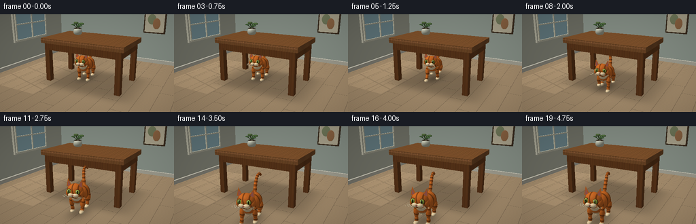
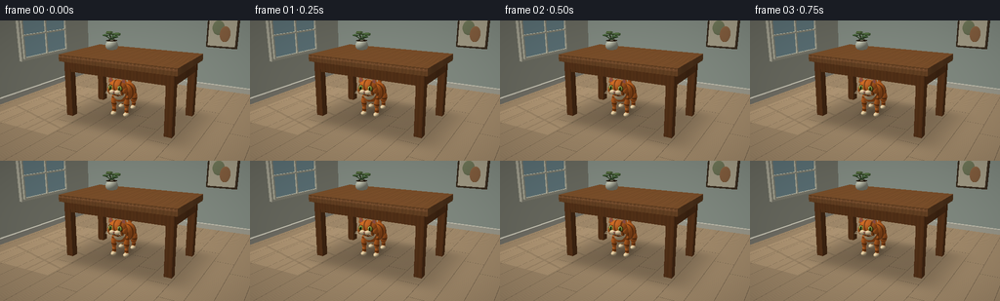
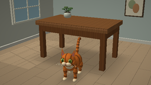

CODING AGENTS AS PIXEL WORLD MODELS
traex/GPT-6.1-Sol · dynamic_spatial_relationship_0017
点击播放 · 原生 RGB 像素
逐轮保存的候选
回放视频、检查图与代码变化。
每份候选均可单独播放。实际图片检查记录在下方工具轨迹中。
候选 01播放与检查图
点击播放 · 原生 RGB 像素


展开代码变化
--- 上一保存版本
+++ 本次保存版本
@@ -0,0 +1,256 @@
+import math
+from pathlib import Path
+import numpy as np
+from PIL import Image, ImageDraw, ImageFilter
+from artifact_io import save
+
+ROOT=Path(__file__).resolve().parent
+W,H=512,288
+rng=np.random.default_rng(25)
+# A small analytic ray renderer. World coordinates: z up, -y towards the viewer.
+cam=np.array([4.5,-8.5,3.8]); target=np.array([0,-.4,.92])
+fw=target-cam; fw/=np.linalg.norm(fw)
+right=np.cross(fw,[0,0,1.]); right/=np.linalg.norm(right)
+up=np.cross(right,fw)
+focal=W/(2*np.tan(np.deg2rad(43)/2))
+yy,xx=np.mgrid[:H,:W]
+rays=fw+(xx[...,None]+.5-W/2)/focal*right-(yy[...,None]+.5-H/2)/focal*up
+rays/=np.linalg.norm(rays,axis=2,keepdims=True)
+D=rays.reshape(-1,3); N=len(D)
+light=np.array([-3,-4,7.]); light/=np.linalg.norm(light)
+
+class Render:
+ def __init__(self, depth=None, color=None):
+ self.depth=np.full(N,np.inf) if depth is None else depth.copy()
+ self.color=np.tile(np.array([.78,.80,.77]),(N,1)) if color is None else color.copy()
+ def surface(self, ids,t,n,p,base,mat='plain',local=None):
+ good=(t>0)&(t<self.depth[ids]); ids=ids[good]
+ if not len(ids): return
+ t=t[good]; n=n[good]; p=p[good]
+ if local is not None: local=local[good]
+ c=np.tile(np.asarray(base),(len(ids),1)).astype(float)
+ if mat=='floor':
+ # pale wide oak boards, quiet grain and staggered end seams
+ board=np.floor(p[:,0]/.62)
+ grain=np.sin(p[:,1]*88+np.sin(p[:,0]*13)*3)+.5*np.sin(p[:,1]*221+p[:,0]*19)
+ c*= (1+.017*grain+.025*np.sin(board*13.1))[:,None]
+ seam=(np.mod(p[:,0],.62)<.012)|(np.mod(p[:,1]+board*.71,3.6)<.012)
+ c[seam]*=.72
+ # broad soft table shadow
+ s=np.exp(-((p[:,0]-.15)/2.15)**6-((p[:,1]+.08)/1.45)**6)
+ c*= (1-.23*s)[:,None]
+ # warm window light projected across the floor
+ patch=(p[:,0] < -1.3)&(p[:,0]>-3.9)&(p[:,1]>-2.5)&(p[:,1]<1.8)
+ strip=(np.mod(p[:,1]+.29*p[:,0],1.19)>.08)&(np.mod(p[:,0],1.08)>.065)
+ c[patch&strip]*=1.10
+ elif mat=='wood':
+ q=local if local is not None else p
+ grain=np.sin(q[:,0]*60+3*np.sin(q[:,1]*3))+ .5*np.sin(q[:,0]*147+np.sin(q[:,1]*6))
+ c*= (1+.035*grain+.017*np.sin(q[:,0]*24))[:,None]
+ elif mat in ('fur','leg','tail','head'):
+ q=local
+ # soft tabby markings, conforming to each curved anatomical piece
+ if mat=='fur':
+ v=q[:,1]*17+1.3*np.sin(q[:,2]*6)+.35*np.sin(q[:,0]*18)
+ elif mat=='leg': v=p[:,2]*30+.6*np.sin(q[:,0]*8)
+ elif mat=='tail': v=q[:,2]*29
+ else: v=q[:,0]*32+1.6*np.sin(q[:,2]*8)
+ stripe=np.clip((np.cos(v)-.57)*2.7,0,1)
+ c*= (1-.39*stripe)[:,None]
+ noise=np.sin(p[:,0]*660+p[:,1]*291+p[:,2]*440)*np.sin(p[:,2]*515-p[:,1]*391)
+ c*= (1+.027*noise)[:,None]
+ if mat=='fur':
+ cream=(q[:,2]<-.17)
+ c[cream]=np.array([.89,.76,.57])
+ diff=np.maximum(0,n@light)
+ sky=np.clip(n[:,2]*.5+.5,0,1)
+ shade=.48+.44*diff+.08*sky
+ # glossy but very soft highlights on polished wood and eyes
+ hvec=light-D[ids]; hvec/=np.linalg.norm(hvec,axis=1,keepdims=True)
+ spec=np.maximum(0,np.sum(n*hvec,axis=1))
+ strength=.025 if mat in ('fur','leg','tail','head') else .06
+ if mat=='eye': strength=.23
+ c=c*shade[:,None]+strength*(spec**(35 if mat=='eye' else 22))[:,None]
+ # atmospheric lift and a subtly warm colour palette
+ self.color[ids]=np.clip(c,0,1)
+ self.depth[ids]=t
+ def plane(self,axis,value,base,mat='plain'):
+ t=(value-cam[axis])/D[:,axis]
+ ids=np.flatnonzero((t>0)&(t<self.depth))
+ p=cam+t[ids,None]*D[ids]; n=np.zeros_like(p); n[:,axis]=1 if cam[axis]>value else -1
+ self.surface(ids,t[ids],n,p,base,mat)
+ def box(self,c,half,base,mat='plain',axes=None):
+ c=np.array(c); half=np.array(half); A=np.eye(3) if axes is None else axes
+ o=(cam-c)@A; d=D@A
+ with np.errstate(divide='ignore',invalid='ignore'):
+ a=(-half-o)/d; b=(half-o)/d
+ near=np.minimum(a,b); far=np.maximum(a,b)
+ t=np.max(near,axis=1); leave=np.min(far,axis=1)
+ ids=np.flatnonzero((leave>=t)&(t>0)&(t<self.depth))
+ if not len(ids):return
+ q=o+t[ids,None]*d[ids]
+ face=np.argmax(near[ids],axis=1)
+ n=np.zeros((len(ids),3)); n[np.arange(len(ids)),face]=np.sign(q[np.arange(len(ids)),face]); n=n@A.T
+ p=cam+t[ids,None]*D[ids]
+ self.surface(ids,t[ids],n,p,base,mat,q)
+ def ellipsoid(self,c,r,base,mat='plain',axes=None):
+ c=np.array(c); r=np.array(r); A=np.eye(3) if axes is None else axes
+ # Restrict intersections to a projected conservative bounding square.
+ cp=c-cam; depth=cp@fw; bound=max(r)*1.12
+ if depth<=bound:return
+ px=W/2+focal*(cp@right)/depth; py=H/2-focal*(cp@up)/depth
+ rad=focal*bound/(depth-bound)
+ x0=max(0,int(px-rad-2));x1=min(W,int(px+rad+3));y0=max(0,int(py-rad-2));y1=min(H,int(py+rad+3))
+ if x1<=x0 or y1<=y0:return
+ ids=(np.arange(y0,y1)[:,None]*W+np.arange(x0,x1)).reshape(-1)
+ o=((cam-c)@A)/r; d=(D[ids]@A)/r
+ b=d@o; a=np.sum(d*d,axis=1); cc=o@o-1
+ discr=b*b-a*cc; valid=discr>=0
+ ids=ids[valid]; a=a[valid];b=b[valid];d=d[valid]
+ if not len(ids): return
+ t=(-b-np.sqrt(discr[valid]))/a
+ q=(o+t[:,None]*d)*r
+ n=(q/(r*r))@A.T; n/=np.linalg.norm(n,axis=1,keepdims=True)
+ p=cam+t[:,None]*D[ids]
+ self.surface(ids,t,n,p,base,mat,q)
+ def triangle(self,verts,base):
+ v=np.array(verts); e1=v[1]-v[0];e2=v[2]-v[0]
+ h=np.cross(D,e2); det=h@e1
+ with np.errstate(divide='ignore',invalid='ignore'):
+ inv=1/det; s=cam-v[0]; u=(h@s)*inv; q=np.cross(s,e1); vv=(D@q)*inv;t=(e2@q)*inv
+ ids=np.flatnonzero((np.abs(det)>1e-8)&(u>=0)&(vv>=0)&(u+vv<=1)&(t>0)&(t<self.depth))
+ if not len(ids):return
+ n=np.cross(e1,e2);n/=np.linalg.norm(n)
+ if n@(cam-v[0])<0:n=-n
+ self.surface(ids,t[ids],np.tile(n,(len(ids),1)),cam+t[ids,None]*D[ids],base)
+ def capsule(self,a,b,r,base,mat='plain',r2=None):
+ a=np.array(a);b=np.array(b);z=b-a;length=np.linalg.norm(z)
+ if length<.001:return
+ z/=length;x=np.cross(z,[0,1,0])
+ if np.linalg.norm(x)<.01:x=np.cross(z,[1,0,0])
+ x/=np.linalg.norm(x);y=np.cross(z,x);A=np.stack([x,y,z],axis=1)
+ self.ellipsoid((a+b)/2,[r,r,length/2+r*.7],base,mat,A)
+
+# Room and solid furniture are fixed and cached for all frames.
+room=Render()
+room.plane(2,0,[.68,.58,.45],'floor')
+room.plane(1,4.2,[.70,.75,.70])
+room.plane(0,-4.6,[.78,.79,.71])
+room.box([0,4.13,.10],[7,.06,.10],[.83,.82,.75])
+room.box([-4.54,0,.10],[.06,6,.10],[.83,.82,.75])
+# Architectural window on the left wall.
+room.box([-4.51,1.05,2.28],[.065,1.3,.95],[.87,.86,.77])
+room.box([-4.43,1.05,2.28],[.012,1.20,.85],[.68,.84,.88])
+for y in [-.15,1.05,2.25]:room.box([-4.39,y,2.28],[.035,.033,.85],[.91,.90,.80])
+for z in [1.44,2.28,3.12]:room.box([-4.38,1.05,z],[.035,1.22,.03],[.91,.90,.80])
+# Framed restrained wall art on the far wall.
+room.box([1.8,4.10,2.40],[.59,.06,.68],[.31,.24,.17],'wood')
+room.box([1.8,4.025,2.40],[.52,.012,.61],[.89,.85,.73])
+room.ellipsoid([1.65,3.999,2.5],[.23,.013,.28],[.59,.63,.47])
+room.ellipsoid([1.92,3.983,2.27],[.20,.012,.30],[.71,.51,.34])
+# table: four legs, rails, bevelled thick walnut top
+wood=[.43,.255,.125]
+for x in [-1.68,1.68]:
+ for y in [-.91,.91]:
+ room.box([x,y,.94],[.115,.115,.94],wood,'wood')
+room.box([0,-.95,1.62],[1.78,.07,.16],wood,'wood')
+room.box([0,.95,1.62],[1.78,.07,.16],wood,'wood')
+for x in [-1.72,1.72]:room.box([x,0,1.62],[.07,.97,.16],wood,'wood')
+room.box([0,0,1.88],[1.91,1.13,.105],[.52,.335,.18],'wood')
+# highlight lip adds a neatly finished rounded edge
+room.box([0,-1.135,1.925],[1.90,.012,.024],[.61,.40,.235],'wood')
+# A little ceramic planter, placed well out of the cat's path on top.
+room.ellipsoid([-.98,.46,2.11],[.21,.21,.19],[.78,.79,.71])
+room.ellipsoid([-.98,.46,2.275],[.19,.19,.017],[.17,.13,.08])
+for i in range(7):
+ a=i*2.4; tip=np.array([-.98+.22*np.cos(a),.46+.20*np.sin(a),2.48+.06*np.sin(i)])
+ room.capsule([-.98,.46,2.28],tip,.017,[.26,.36,.20])
+ room.ellipsoid(tip,[.12,.055,.033],[.31+.025*np.sin(i),.43,.24])
+
+BASE_DEPTH=room.depth.copy();BASE_COLOR=room.color.copy()
+FLOOR_IDS=np.flatnonzero(np.abs((cam+BASE_DEPTH[:,None]*D)[:,2])<.00001)
+FLOOR_POS=cam+BASE_DEPTH[FLOOR_IDS,None]*D[FLOOR_IDS]
+
+def cat(render,origin,heading,phase,running=0):
+ f=np.array([np.sin(heading),-np.cos(heading),0]); r=np.array([np.cos(heading),np.sin(heading),0]); z=np.array([0,0,1.]); A=np.stack([r,f,z],axis=1)
+ bob=running*.065*np.sin(phase*2)
+ o=np.array(origin)+[0,0,bob]
+ def P(x,s,h):return o+r*x+f*s+z*h
+ def E(x,s,h,rr,col,mat='fur'):render.ellipsoid(P(x,s,h),rr,col,mat,A)
+ ginger=[.83,.43,.15]; cream=[.94,.84,.66]; dark=[.41,.215,.085]
+ # Upright gently curving expressive tail.
+ tail=[]
+ for i in range(11):
+ u=i/10
+ tail.append(P(.065*np.sin(u*4+phase*.25)*running,-.52-.65*u,.73+.70*np.sin(u*np.pi*.67)))
+ for i in range(10):render.capsule(tail[i],tail[i+1],.071-.031*i/10,ginger,'tail')
+ # Pairs of articulated legs, swinging in alternating running strides.
+ for side in [-1,1]:
+ for front in [False,True]:
+ s=.36 if front else -.37; x=side*.21
+ ang=phase+(0 if front else 2.0)+(0 if side==-1 else math.pi)
+ swing=running*.22*np.sin(ang)
+ lift=running*.17*max(0,np.cos(ang))
+ hip=P(x,s,.65 if front else .58)
+ knee=P(x,s+swing*.45,.32+lift*.4)
+ foot=P(x,s+swing,.09+lift)
+ render.capsule(hip,knee,.089 if front else .12,ginger,'leg')
+ render.capsule(knee,foot,.065,ginger,'leg')
+ render.ellipsoid(foot+f*.055,[.085,.125,.065],cream,'plain',A)
+ # elongated supple torso with haunch and shoulder volumes
+ E(0,-.06,.66,[.285,.58,.285],ginger)
+ E(0,-.37,.62,[.29,.275,.31],ginger)
+ E(0,.31,.70,[.235,.25,.29],ginger)
+ E(0,.45,.82,[.20,.18,.26],cream,'plain')
+ # Head is tilted slightly forward, with distinct cat cheeks and pointed ears.
+ E(0,.59,1.005,[.287,.25,.258],ginger,'head')
+ E(-.205,.59,.94,[.115,.17,.15],ginger,'head')
+ E(.205,.59,.94,[.115,.17,.15],ginger,'head')
+ for side in [-1,1]:
+ x=side*.19
+ a=P(x-side*.10,.62,1.17);b=P(x+side*.105,.60,1.15);top=P(x+side*.057,.575,1.435);back=P(x,.43,1.14)
+ render.triangle([a,b,top],ginger)
+ render.triangle([a,top,back],[.62,.31,.11])
+ render.triangle([b,back,top],[.73,.365,.12])
+ render.triangle([P(x-side*.063,.637,1.19),P(x+side*.064,.625,1.18),P(x+side*.045,.601,1.37)],[.72,.405,.355])
+ # green eyes with dark rims, slit pupils, and pinpoint catchlights
+ for side in [-1,1]:
+ x=side*.145
+ E(x,.788,1.059,[.087,.029,.094],dark,'plain')
+ E(x,.807,1.06,[.072,.031,.075],[.60,.69,.27],'eye')
+ E(x,.833,1.06,[.019,.012,.060],[.055,.070,.027],'eye')
+ E(x-.021,.844,1.092,[.014,.006,.014],[.99,.98,.91],'plain')
+ # white split muzzle, pink triangular nose, tiny mouth
+ E(-.078,.822,.933,[.103,.075,.075],cream,'plain')
+ E(.078,.822,.933,[.103,.075,.075],cream,'plain')
+ render.triangle([P(-.048,.896,.971),P(.048,.896,.971),P(0,.909,.937)],[.64,.32,.29])
+ render.capsule(P(0,.90,.939),P(0,.903,.909),.006,[.26,.16,.13])
+ for side in [-1,1]:
+ render.capsule(P(0,.903,.909),P(side*.047,.882,.899),.005,[.31,.23,.16])
+ for j in range(3):
+ render.capsule(P(side*.09,.874,.941-j*.024),P(side*(.35+.035*j),.84,.945-j*.035),.0035,[.89,.85,.71])
+
+frames=[]
+for i in range(20):
+ # Hold beneath the tabletop; accelerate out; brake and look ahead in the foreground.
+ if i<5:
+ u=0.;active=0.;phase=0.;head=.17+.025*np.sin(i*.6)
+ elif i<14:
+ u=(i-4)/10;u=u*u*(3-2*u);active=1.;phase=(i-4)*1.45;head=.27
+ else:
+ u=1.;active=max(0,1-(i-13)/3);phase=(i-4)*1.45;head=.27-.05*(i-14)/5
+ origin=np.array([-.30+1.15*u,.08-2.68*u,0.])
+ rr=Render(BASE_DEPTH,BASE_COLOR)
+ # Moving soft contact shadow beneath the four paws and belly.
+ delta=FLOOR_POS-origin
+ sh=np.exp(-((delta[:,0]/.46)**2+(delta[:,1]/.79)**2)*1.7)
+ rr.color[FLOOR_IDS]*=(1-.29*sh)[:,None]
+ cat(rr,origin,head,phase,active)
+ arr=np.clip(rr.color.reshape(H,W,3)*255,0,255).astype('uint8')
+ # subtle photographic vignette, then antialias for the native output
+ yn,xn=np.mgrid[:H,:W];v=1-.075*((xn-W/2)**2/(W/2)**2+(yn-H/2)**2/(H/2)**2)
+ arr=np.uint8(np.clip(arr*v[...,None],0,255))
+ im=Image.fromarray(arr).resize((256,144),Image.Resampling.LANCZOS)
+ frames.append(np.asarray(im))
+ print('rendered',i,flush=True)
+save(np.stack(frames),ROOT)
候选 02播放与检查图
点击播放 · 原生 RGB 像素

展开代码变化
--- 上一保存版本 +++ 本次保存版本 @@ -239,7 +239,7 @@ u=(i-4)/10;u=u*u*(3-2*u);active=1.;phase=(i-4)*1.45;head=.27 else: u=1.;active=max(0,1-(i-13)/3);phase=(i-4)*1.45;head=.27-.05*(i-14)/5 - origin=np.array([-.30+1.15*u,.08-2.68*u,0.]) + origin=np.array([-.30+1.15*u,.08-2.23*u,0.]) rr=Render(BASE_DEPTH,BASE_COLOR) # Moving soft contact shadow beneath the four paws and belly. delta=FLOOR_POS-origin
候选 03播放与检查图
可观测工具轨迹
实际执行的命令与返回图片。
命令 1exit 0
/bin/bash -lc 'ls -la && cat prompt.txt && cat GENERATION_RULES.md && cat task_spec.json'
命令 2exit 0
/bin/bash -lc "cat artifact_io.py && python - <<'PY' import importlib.util for s in ['numpy','PIL','scipy']: print(s, bool(importlib.util.find_spec(s))) PY"
命令 3exit 0
/bin/bash -lc "cat > generate.py <<'PY'
import math
from pathlib import Path
import numpy as np
from PIL import Image, ImageDraw, ImageFilter
from artifact_io import save
ROOT=Path(__file__).resolve().parent
W,H=512,288
rng=np.random.default_rng(25)
# A small analytic ray renderer. World coordinates: z up, -y towards the viewer.
cam=np.array([4.5,-8.5,3.8]); target=np.array([0,-.4,.92])
fw=target-cam; fw/=np.linalg.norm(fw)
right=np.cross(fw,[0,0,1.]); right/=np.linalg.norm(right)
up=np.cross(right,fw)
focal=W/(2*np.tan(np.deg2rad(43)/2))
yy,xx=np.mgrid[:H,:W]
rays=fw+(xx[...,None]+.5-W/2)/focal*right-(yy[...,None]+.5-H/2)/focal*up
rays/=np.linalg.norm(rays,axis=2,keepdims=True)
D=rays.reshape(-1,3); N=len(D)
light=np.array([-3,-4,7.]); light/=np.linalg.norm(light)
class Render:
def __init__(self, depth=None, color=None):
self.depth=np.full(N,np.inf) if depth is None else depth.copy()
self.color=np.tile(np.array([.78,.80,.77]),(N,1)) if color is None else color.copy()
def surface(self, ids,t,n,p,base,mat='plain',local=None):
good=(t>0)&(t<self.depth[ids]); ids=ids[good]
if not len(ids): return
t=t[good]; n=n[good]; p=p[good]
if local is not None: local=local[good]
c=np.tile(np.asarray(base),(len(ids),1)).astype(float)
if mat=='floor':
# pale wide oak boards, quiet grain and staggered end seams
board=np.floor(p[:,0]/.62)
grain=np.sin(p[:,1]*88+np.sin(p[:,0]*13)*3)+.5*np.sin(p[:,1]*221+p[:,0]*19)
c*= (1+.017*grain+.025*np.sin(board*13.1))[:,None]
seam=(np.mod(p[:,0],.62)<.012)|(np.mod(p[:,1]+board*.71,3.6)<.012)
c[seam]*=.72
# broad soft table shadow
s=np.exp(-((p[:,0]-.15)/2.15)**6-((p[:,1]+.08)/1.45)**6)
c*= (1-.23*s)[:,None]
# warm window light projected across the floor
patch=(p[:,0] < -1.3)&(p[:,0]>-3.9)&(p[:,1]>-2.5)&(p[:,1]<1.8)
strip=(np.mod(p[:,1]+.29*p[:,0],1.19)>.08)&(np.mod(p[:,0],1.08)>.065)
c[patch&strip]*=1.10
elif mat=='wood':
q=local if local is not None else p
grain=np.sin(q[:,0]*60+3*np.sin(q[:,1]*3))+ .5*np.sin(q[:,0]*147+np.sin(q[:,1]*6))
c*= (1+.035*grain+.017*np.sin(q[:,0]*24))[:,None]
elif mat in ('fur','leg','tail','head'):
q=local
# soft tabby markings, conforming to each curved anatomical piece
if mat=='fur':
v=q[:,1]*17+1.3*np.sin(q[:,2]*6)+.35*np.sin(q[:,0]*18)
elif mat=='leg': v=p[:,2]*30+.6*np.sin(q[:,0]*8)
elif mat=='tail': v=q[:,2]*29
else: v=q[:,0]*32+1.6*np.sin(q[:,2]*8)
stripe=np.clip((np.cos(v)-.57)*2.7,0,1)
c*= (1-.39*stripe)[:,None]
noise=np.sin(p[:,0]*660+p[:,1]*291+p[:,2]*440)*np.sin(p[:,2]*515-p[:,1]*391)
c*= (1+.027*noise)[:,None]
if mat=='fur':
cream=(q[:,2]<-.17)
c[cream]=np.array([.89,.76,.57])
diff=np.maximum(0,n@light)
sky=np.clip(n[:,2]*.5+.5,0,1)
shade=.48+.44*diff+.08*sky
# glossy but very soft highlights on polished wood and eyes
hvec=light-D[ids]; hvec/=np.linalg.norm(hvec,axis=1,keepdims=True)
spec=np.maximum(0,np.sum(n*hvec,axis=1))
strength=.025 if mat in ('fur','leg','tail','head') else .06
if mat=='eye': strength=.23
c=c*shade[:,None]+strength*(spec**(35 if mat=='eye' else 22))[:,None]
# atmospheric lift and a subtly warm colour palette
self.color[ids]=np.clip(c,0,1)
self.depth[ids]=t
def plane(self,axis,value,base,mat='plain'):
t=(value-cam[axis])/D[:,axis]
ids=np.flatnonzero((t>0)&(t<self.depth))
p=cam+t[ids,None]*D[ids]; n=np.zeros_like(p); n[:,axis]=1 if cam[axis]>value else -1
self.surface(ids,t[ids],n,p,base,mat)
def box(self,c,half,base,mat='plain',axes=None):
c=np.array(c); half=np.array(half); A=np.eye(3) if axes is None else axes
o=(cam-c)@A; d=D@A
with np.errstate(divide='ignore',invalid='ignore'):
a=(-half-o)/d; b=(half-o)/d
near=np.minimum(a,b); far=np.maximum(a,b)
t=np.max(near,axis=1); leave=np.min(far,axis=1)
ids=np.flatnonzero((leave>=t)&(t>0)&(t<self.depth))
if not len(ids):return
q=o+t[ids,None]*d[ids]
face=np.argmax(near[ids],axis=1)
n=np.zeros((len(ids),3)); n[np.arange(len(ids)),face]=np.sign(q[np.arange(len(ids)),face]); n=n@A.T
p=cam+t[ids,None]*D[ids]
self.surface(ids,t[ids],n,p,base,mat,q)
def ellipsoid(self,c,r,base,mat='plain',axes=None):
c=np.array(c); r=np.array(r); A=np.eye(3) if axes is None else axes
# Restrict intersections to a projected conservative bounding square.
cp=c-cam; depth=cp@fw; bound=max(r)*1.12
if depth<=bound:return
px=W/2+focal*(cp@right)/depth; py=H/2-focal*(cp@up)/depth
rad=focal*bound/(depth-bound)
x0=max(0,int(px-rad-2));x1=min(W,int(px+rad+3));y0=max(0,int(py-rad-2));y1=min(H,int(py+rad+3))
if x1<=x0 or y1<=y0:return
ids=(np.arange(y0,y1)[:,None]*W+np.arange(x0,x1)).reshape(-1)
o=((cam-c)@A)/r; d=(D[ids]@A)/r
b=d@o; a=np.sum(d*d,axis=1); cc=o@o-1
discr=b*b-a*cc; valid=discr>=0
ids=ids[valid]; a=a[valid];b=b[valid];d=d[valid]
if not len(ids): return
t=(-b-np.sqrt(discr[valid]))/a
q=(o+t[:,None]*d)*r
n=(q/(r*r))@A.T; n/=np.linalg.norm(n,axis=1,keepdims=True)
p=cam+t[:,None]*D[ids]
self.surface(ids,t,n,p,base,mat,q)
def triangle(self,verts,base):
v=np.array(verts); e1=v[1]-v[0];e2=v[2]-v[0]
h=np.cross(D,e2); det=h@e1
with np.errstate(divide='ignore',invalid='ignore'):
inv=1/det; s=cam-v[0]; u=(h@s)*inv; q=np.cross(s,e1); vv=(D@q)*inv;t=(e2@q)*inv
ids=np.flatnonzero((np.abs(det)>1e-8)&(u>=0)&(vv>=0)&(u+vv<=1)&(t>0)&(t<self.depth))
if not len(ids):return
n=np.cross(e1,e2);n/=np.linalg.norm(n)
if n@(cam-v[0])<0:n=-n
self.surface(ids,t[ids],np.tile(n,(len(ids),1)),cam+t[ids,None]*D[ids],base)
def capsule(self,a,b,r,base,mat='plain',r2=None):
a=np.array(a);b=np.array(b);z=b-a;length=np.linalg.norm(z)
if length<.001:return
z/=length;x=np.cross(z,[0,1,0])
if np.linalg.norm(x)<.01:x=np.cross(z,[1,0,0])
x/=np.linalg.norm(x);y=np.cross(z,x);A=np.stack([x,y,z],axis=1)
self.ellipsoid((a+b)/2,[r,r,length/2+r*.7],base,mat,A)
# Room and solid furniture are fixed and cached for all frames.
room=Render()
room.plane(2,0,[.68,.58,.45],'floor')
room.plane(1,4.2,[.70,.75,.70])
room.plane(0,-4.6,[.78,.79,.71])
room.box([0,4.13,.10],[7,.06,.10],[.83,.82,.75])
room.box([-4.54,0,.10],[.06,6,.10],[.83,.82,.75])
# Architectural window on the left wall.
room.box([-4.51,1.05,2.28],[.065,1.3,.95],[.87,.86,.77])
room.box([-4.43,1.05,2.28],[.012,1.20,.85],[.68,.84,.88])
for y in [-.15,1.05,2.25]:room.box([-4.39,y,2.28],[.035,.033,.85],[.91,.90,.80])
for z in [1.44,2.28,3.12]:room.box([-4.38,1.05,z],[.035,1.22,.03],[.91,.90,.80])
# Framed restrained wall art on the far wall.
room.box([1.8,4.10,2.40],[.59,.06,.68],[.31,.24,.17],'wood')
room.box([1.8,4.025,2.40],[.52,.012,.61],[.89,.85,.73])
room.ellipsoid([1.65,3.999,2.5],[.23,.013,.28],[.59,.63,.47])
room.ellipsoid([1.92,3.983,2.27],[.20,.012,.30],[.71,.51,.34])
# table: four legs, rails, bevelled thick walnut top
wood=[.43,.255,.125]
for x in [-1.68,1.68]:
for y in [-.91,.91]:
room.box([x,y,.94],[.115,.115,.94],wood,'wood')
room.box([0,-.95,1.62],[1.78,.07,.16],wood,'wood')
room.box([0,.95,1.62],[1.78,.07,.16],wood,'wood')
for x in [-1.72,1.72]:room.box([x,0,1.62],[.07,.97,.16],wood,'wood')
room.box([0,0,1.88],[1.91,1.13,.105],[.52,.335,.18],'wood')
# highlight lip adds a neatly finished rounded edge
room.box([0,-1.135,1.925],[1.90,.012,.024],[.61,.40,.235],'wood')
# A little ceramic planter, placed well out of the cat's path on top.
room.ellipsoid([-.98,.46,2.11],[.21,.21,.19],[.78,.79,.71])
room.ellipsoid([-.98,.46,2.275],[.19,.19,.017],[.17,.13,.08])
for i in range(7):
a=i*2.4; tip=np.array([-.98+.22*np.cos(a),.46+.20*np.sin(a),2.48+.06*np.sin(i)])
room.capsule([-.98,.46,2.28],tip,.017,[.26,.36,.20])
room.ellipsoid(tip,[.12,.055,.033],[.31+.025*np.sin(i),.43,.24])
BASE_DEPTH=room.depth.copy();BASE_COLOR=room.color.copy()
FLOOR_IDS=np.flatnonzero(np.abs((cam+BASE_DEPTH[:,None]*D)[:,2])<.00001)
FLOOR_POS=cam+BASE_DEPTH[FLOOR_IDS,None]*D[FLOOR_IDS]
def cat(render,origin,heading,phase,running=0):
f=np.array([np.sin(heading),-np.cos(heading),0]); r=np.array([np.cos(heading),np.sin(heading),0]); z=np.array([0,0,1.]); A=np.stack([r,f,z],axis=1)
bob=running*.065*np.sin(phase*2)
o=np.array(origin)+[0,0,bob]
def P(x,s,h):return o+r*x+f*s+z*h
def E(x,s,h,rr,col,mat='fur'):render.ellipsoid(P(x,s,h),rr,col,mat,A)
ginger=[.83,.43,.15]; cream=[.94,.84,.66]; dark=[.41,.215,.085]
# Upright gently curving expressive tail.
tail=[]
for i in range(11):
u=i/10
tail.append(P(.065*np.sin(u*4+phase*.25)*running,-.52-.65*u,.73+.70*np.sin(u*np.pi*.67)))
for i in range(10):render.capsule(tail[i],tail[i+1],.071-.031*i/10,ginger,'tail')
# Pairs of articulated legs, swinging in alternating running strides.
for side in [-1,1]:
for front in [False,True]:
s=.36 if front else -.37; x=side*.21
ang=phase+(0 if front else 2.0)+(0 if side==-1 else math.pi)
swing=running*.22*np.sin(ang)
lift=running*.17*max(0,np.cos(ang))
hip=P(x,s,.65 if front else .58)
knee=P(x,s+swing*.45,.32+lift*.4)
foot=P(x,s+swing,.09+lift)
render.capsule(hip,knee,.089 if front else .12,ginger,'leg')
render.capsule(knee,foot,.065,ginger,'leg')
render.ellipsoid(foot+f*.055,[.085,.125,.065],cream,'plain',A)
# elongated supple torso with haunch and shoulder volumes
E(0,-.06,.66,[.285,.58,.285],ginger)
E(0,-.37,.62,[.29,.275,.31],ginger)
E(0,.31,.70,[.235,.25,.29],ginger)
E(0,.45,.82,[.20,.18,.26],cream,'plain')
# Head is tilted slightly forward, with distinct cat cheeks and pointed ears.
E(0,.59,1.005,[.287,.25,.258],ginger,'head')
E(-.205,.59,.94,[.115,.17,.15],ginger,'head')
E(.205,.59,.94,[.115,.17,.15],ginger,'head')
for side in [-1,1]:
x=side*.19
a=P(x-side*.10,.62,1.17);b=P(x+side*.105,.60,1.15);top=P(x+side*.057,.575,1.435);back=P(x,.43,1.14)
render.triangle([a,b,top],ginger)
render.triangle([a,top,back],[.62,.31,.11])
render.triangle([b,back,top],[.73,.365,.12])
render.triangle([P(x-side*.063,.637,1.19),P(x+side*.064,.625,1.18),P(x+side*.045,.601,1.37)],[.72,.405,.355])
# green eyes with dark rims, slit pupils, and pinpoint catchlights
for side in [-1,1]:
x=side*.145
E(x,.788,1.059,[.087,.029,.094],dark,'plain')
E(x,.807,1.06,[.072,.031,.075],[.60,.69,.27],'eye')
E(x,.833,1.06,[.019,.012,.060],[.055,.070,.027],'eye')
E(x-.021,.844,1.092,[.014,.006,.014],[.99,.98,.91],'plain')
# white split muzzle, pink triangular nose, tiny mouth
E(-.078,.822,.933,[.103,.075,.075],cream,'plain')
E(.078,.822,.933,[.103,.075,.075],cream,'plain')
render.triangle([P(-.048,.896,.971),P(.048,.896,.971),P(0,.909,.937)],[.64,.32,.29])
render.capsule(P(0,.90,.939),P(0,.903,.909),.006,[.26,.16,.13])
for side in [-1,1]:
render.capsule(P(0,.903,.909),P(side*.047,.882,.899),.005,[.31,.23,.16])
for j in range(3):
render.capsule(P(side*.09,.874,.941-j*.024),P(side*(.35+.035*j),.84,.945-j*.035),.0035,[.89,.85,.71])
frames=[]
for i in range(20):
# Hold beneath the tabletop; accelerate out; brake and look ahead in the foreground.
if i<5:
u=0.;active=0.;phase=0.;head=.17+.025*np.sin(i*.6)
elif i<14:
u=(i-4)/10;u=u*u*(3-2*u);active=1.;phase=(i-4)*1.45;head=.27
else:
u=1.;active=max(0,1-(i-13)/3);phase=(i-4)*1.45;head=.27-.05*(i-14)/5
origin=np.array([-.30+1.15*u,.08-2.68*u,0.])
rr=Render(BASE_DEPTH,BASE_COLOR)
# Moving soft contact shadow beneath the four paws and belly.
delta=FLOOR_POS-origin
sh=np.exp(-((delta[:,0]/.46)**2+(delta[:,1]/.79)**2)*1.7)
rr.color[FLOOR_IDS]*=(1-.29*sh)[:,None]
cat(rr,origin,head,phase,active)
arr=np.clip(rr.color.reshape(H,W,3)*255,0,255).astype('uint8')
# subtle photographic vignette, then antialias for the native output
yn,xn=np.mgrid[:H,:W];v=1-.075*((xn-W/2)**2/(W/2)**2+(yn-H/2)**2/(H/2)**2)
arr=np.uint8(np.clip(arr*v[...,None],0,255))
im=Image.fromarray(arr).resize((256,144),Image.Resampling.LANCZOS)
frames.append(np.asarray(im))
print('rendered',i,flush=True)
save(np.stack(frames),ROOT)
PY
OPENBLAS_NUM_THREADS=1 python generate.py"命令 4exit 0
/bin/bash -lc "python - <<'PY'
p='generate.py'
s=open(p).read().replace('.08-2.68*u','.08-2.23*u')
open(p,'w').write(s)
PY
OPENBLAS_NUM_THREADS=1 python generate.py"命令 5exit 2
/bin/bash -lc 'if command -v ffmpeg >/dev/null 2>&1; then ffmpeg -loglevel error -y -framerate 4 -i frames/%02d.png -c:v libx264 -pix_fmt yuv420p -crf 18 video.mp4; fi ls -lh pixels.npz index.html generate.py video.mp4 2>/dev/null'
视觉工具实际返回图片 1

视觉工具实际返回图片 2

保存候选 3 份；完成命令 5 次；可验证图片返回 2 张。原始 API 响应与完整日志保留在本地。